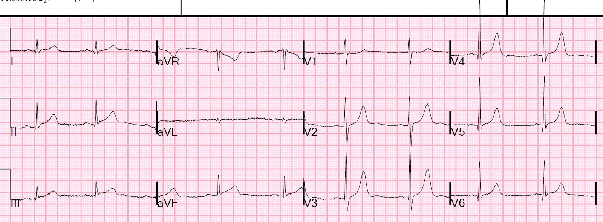
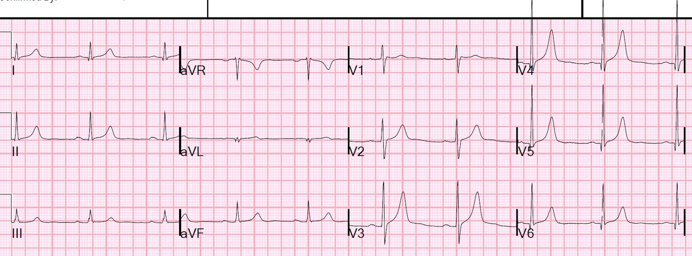
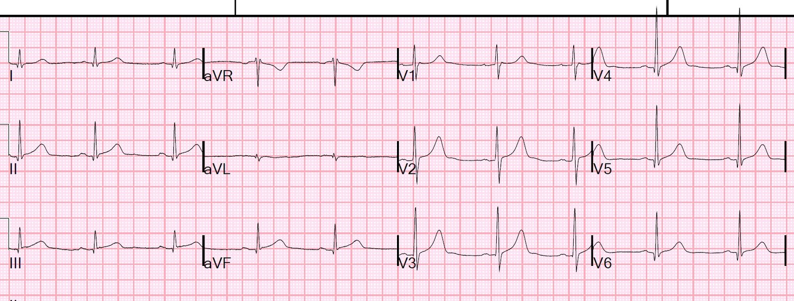
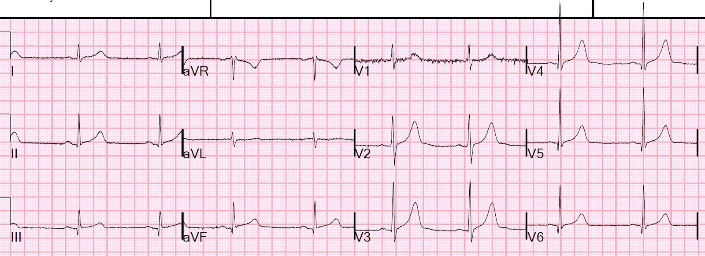
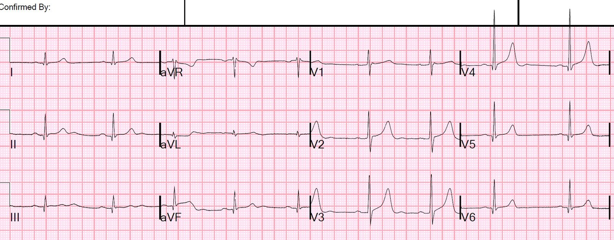
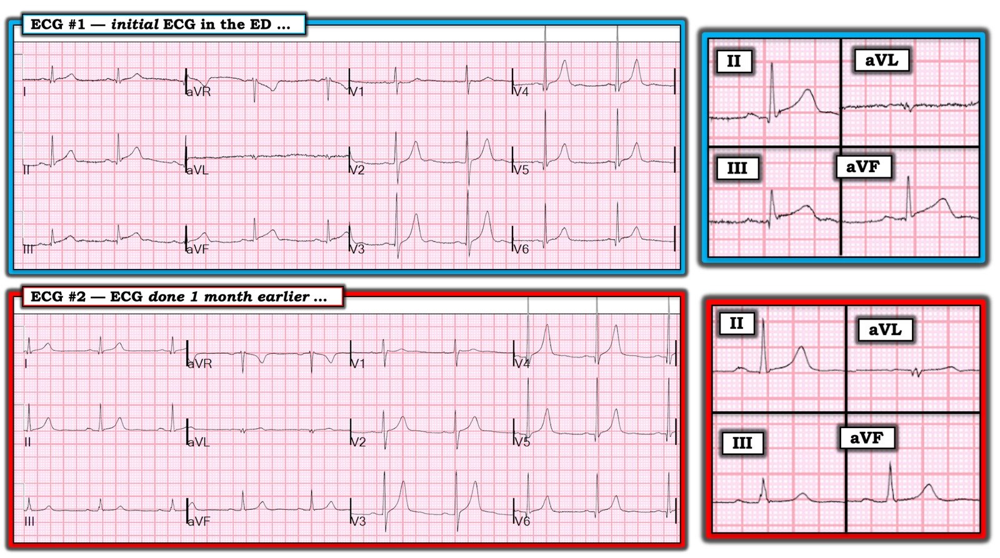

28/06/2019 — ST chênh lên kín đáo ở thành dưới: đoạn ST thẳng, nhưng cũng không có ST chênh xuống soi gương ở aVL: điều nào quan trọng hơn?
Bản dịch tiếng Việt của bài "Inferior Subtle ST elevation: straight ST segment, but also no reciprocal ST depression in aVL: which is more important?" – Dr. Smith’s ECG Blog. Giữ nguyên toàn bộ 10 hình ảnh của bản gốc.
Bệnh nhân 60 mấy tuổi, có tiền sử nhồi máu cơ tim (MI) và đặt stent, đến viện vì đau ngực lan ra sau lưng kèm buồn nôn/nôn.
Mốc thời gian ban đầu (time zero)


Có ST chênh lên ở các chuyển đạo dưới. Đây có phải là biến thể bình thường? Có phải do thiếu máu cục bộ (OMI)? [Viêm màng ngoài tim? (KHÔNG!)]
Có một dấu hiệu chống lại OMI thành dưới (Không có ST chênh xuống soi gương (reciprocal) ở aVL; ST chênh xuống (STD) ở aVL cực kỳ nhạy đối với OMI thành dưới; Tài liệu tham khảo: Bischof và Smith).
Tuy nhiên, cũng có ST thẳng đuỗn ở các chuyển đạo dưới, và một đoạn ST thẳng ở aVF; điều này cực kỳ hiếm gặp ở ST chênh lên biến thể bình thường).
_______
Cũng có biến dạng phần cuối QRS (T-QRS-D) ở II, III, aVF [không có sóng S và sóng J (khía)]. Ý nghĩa của dấu hiệu này ở các chuyển đạo dưới chưa được biết, nhưng tôi ngờ rằng nó là một chỉ điểm giúp phân biệt OMI thành dưới với biến thể bình thường.
Biến dạng phần cuối QRS chắc chắn có ý nghĩa đối với OMI thành trước ở V2 và V3:
Một bệnh nhân 20 mấy tuổi, say rượu, kích động, có đau ngực
______
Đây là điện tâm đồ từ một tháng trước:


Bệnh nhân được dùng aspirin, heparin và nitroglycerin tĩnh mạch.
Một điện tâm đồ khác được ghi ở phút thứ 35:


Vào lúc này, kết quả troponin I đầu tiên trả về là 0.55 ng/mL (tăng đáng kể)
D-dimer cũng tăng.
Một điện tâm đồ khác được ghi ở phút thứ 58:


Có lo ngại bóc tách động mạch chủ, nên đã chụp CT và kết quả âm tính.
Phòng thông tim (cath lab) được kích hoạt:
Kết quả: Hẹp 95% có huyết khối tại lỗ xuất phát của một nhánh LPL2 nhỏ, kèm hẹp 70% tại chỗ chia đôi LPL2/LPDA ở Cx đoạn xa/đoạn rãnh nhĩ thất (AV groove); hẹp dạng ống 70% ở đoạn giữa động mạch mũ. (Nói cách khác, nhồi máu cơ tim thành dưới có kèm phần nào tổn thương thành sau). Tổn thương đã được đặt stent.
Về giải phẫu mạch vành, xem tại đây: https://www.pcipedia.org/wiki/Coronary_anatomy (giải phẫu động mạch vành)
Đây là điện tâm đồ sau can thiệp:


Siêu âm tim chính thức:
Phân suất tống máu thất trái ước tính bình thường – 55%.
Rối loạn vận động thành khu trú – thành dưới đoạn giữa và đoạn đáy.
Troponin I đạt đỉnh 12.1 ng/mL.
Những điểm cần học:
1. Bất kỳ ST chênh lên nào ở thành dưới cũng có thể là OMI cấp, nhưng có những khác biệt tinh tế giữa một bên là OMI và bên kia là biến thể bình thường.
2. 99% OMI thành dưới hoặc là rõ ràng, hoặc có ít nhiều ST chênh xuống ở aVL. Nhưng 1% có thể không thuộc trường hợp nào trong hai trường hợp đó!
3. Trong ca này, có thể nói đây là nhồi máu cơ tim “rõ ràng” vì có đoạn ST thẳng ở aVF. Đoạn ST thẳng hầu như không bao giờ xảy ra ở ST chênh lên thành dưới KHÔNG do OMI (biến thể bình thường, viêm màng ngoài tim)
4. Nếu bệnh nhân đến viện với triệu chứng của hội chứng vành cấp (ACS), troponin tăng, và triệu chứng dai dẳng dù đã điều trị nội khoa [kháng tiểu cầu, chống huyết khối, và chống thiếu máu cục bộ (nitro)], thì có chỉ định kích hoạt phòng thông tim bất kể dấu hiệu trên điện tâm đồ.
5. So sánh với điện tâm đồ cũ.
6. Ghi các điện tâm đồ liên tiếp.

===================================
Bình luận của KEN GRAUER, MD (28/6/2019):
===================================
Tôi thích ca này vì nó là một ví dụ tuyệt vời về cách sử dụng các bản ghi để so sánh ở bệnh nhân có tiền sử bệnh mạch vành.
- Để cho rõ — tôi đã đặt 2 điện tâm đồ đầu tiên của ca này cạnh nhau trong Hình 1. Để làm nổi bật các dấu hiệu MẤU CHỐT — tôi đã phóng to một phức bộ ở các chuyển đạo II, III, aVF và aVL, đặt ở bên phải mỗi điện tâm đồ 12 chuyển đạo.


Ca BỆNH: Bệnh nhân 60 mấy tuổi đến khoa cấp cứu (ED) vì đau ngực mới khởi phát. Bệnh nhân có tiền sử trước đây về nhồi máu cơ tim (MI) + đặt stent.
- Những điểm CHÍNH: Bệnh nhân này có bệnh mạch vành đã biết từ trước. Do đó: i) Điện tâm đồ ban đầu có thể cho thấy dấu hiệu của tổn thương cũ; ii) Bằng chứng điện tâm đồ của OMI mới có thể kín đáo; có thể khó phân biệt các dấu hiệu điện tâm đồ “mới” với “cũ” nếu chỉ dựa vào điện tâm đồ ban đầu (tức là chỉ dựa vào điện tâm đồ #1 trong Hình 1); và, iii) Việc tìm được một điện tâm đồ trước đây của bệnh nhân này có thể giúp ích vô giá!

CÂU HỎI: — về Điện tâm đồ #1: Trước khi bạn xem điện tâm đồ cũ trong ca này (tức là điện tâm đồ #2 trong Hình 1) — BẠN lẽ ra đã phải thấy 3 dấu hiệu bất thường ở các chuyển đạo ngực của Điện tâm đồ #1! — Bạn có thấy 3 dấu hiệu bất thường này không ??? —
- GỢI Ý: Sẽ rất DỄ bỏ sót 3 dấu hiệu này nếu bạn không đọc điện tâm đồ một cách Hệ thống …
SUY NGHĨ CỦA TÔI về Điện tâm đồ #1 — Nhịp khá đều, tần số trong khoảng 55-60/phút. QRS hẹp. Đây là nhịp chậm xoang.
- Mọi khoảng (PR, thời gian QRS, QTc) đều bình thường.
- Trục mặt phẳng trán bình thường (khoảng +65 độ).
- Không có lớn các buồng tim.
Về Thay đổi Q–R–S–T:
- Có sóng Q ở nhiều chuyển đạo, gồm các chuyển đạo I, II, III, aVL, aVF; và các chuyển đạo V3 đến V6. Phần lớn các sóng Q này nhỏ và hẹp. Nhiều sóng có lẽ không có ý nghĩa lâm sàng. Dù vậy — tuy rất nhỏ, sóng Q ở aVL của điện tâm đồ #1 có thể phản ánh nhồi máu thành bên không rõ thời điểm, xét đến việc QRS ở chuyển đạo này nhỏ như thế nào (Lưu ý trong hình phóng to rằng sóng lệch ban đầu ở chuyển đạo aVL của điện tâm đồ #1 đúng là âm = một sóng Q).
- Dù sóng Q ở các chuyển đạo V4, V5 và V6 hẹp — chúng thực sự sâu hơn một chút so với thường thấy ở sóng q vách bình thường. Ở bệnh nhân có bệnh mạch vành đã được ghi nhận này — các sóng q này có thể phản ánh nhồi máu thành bên cũ (đặc biệt khi xét đến sóng Q ở chuyển đạo aVL).
- Về Tăng tiến sóng R —Vùng chuyển tiếp xuất hiện sớm! Thực tế — R = S ở chuyển đạo V1, và đây không phải là dấu hiệu “bình thường”! Vì các lực của LV (thất trái) chiếm ưu thế trên điện tâm đồ bình thường — thường chỉ có một sóng r ban đầu nhỏ ở chuyển đạo V1, đi kèm một sóng S khá sâu ở chuyển đạo V1 (sóng lệch âm sâu này ở chuyển đạo bên phải V1 là do ưu thế bình thường của các lực thất trái).
- LƯU Ý: Kết quả đọc bằng máy tính hầu như luôn bỏ sót sóng R cao ở chuyển đạo V1. Nhiều (nếu không nói là phần lớn) bác sĩ lâm sàng cũng thường bỏ qua dấu hiệu quan trọng này nếu họ không có cách tiếp cận hệ thống. Đây chính là lý do tôi thêm chữ “R” vào mẹo ghi nhớ khi tìm “Thay đổi Q-R-S-T” — vì nếu không thì quá dễ quên việc thường quy xem tăng tiến sóng R có phù hợp hay không.
- ĐIỂM THEN CHỐT (PEARL): Nhận ra Sóng R cao ở Chuyển đạo V1 cần nhanh chóng gợi nhớ danh sách 6 nguyên nhân thường gặp — một trong số đó là nhồi máu cơ tim (MI) thành sau. Điều này thực sự rất liên quan đến ca này! (BẤM VÀO ĐÂY — để xem bàn luận về cách phân biệt 6 tình trạng này).
- Để ôn lại “Quan điểm của tôi” về Cách tiếp cận Hệ thống trong đọc điện tâm đồ mà tôi ưa dùng — BẤM VÀO ĐÂY —
Quay lại ca này với 2 thông số cuối cùng trong đánh giá Q-R-S-T của tôi đối với điện tâm đồ #1 = ST-T bất thường:
- Chúng ta đã ghi nhận sóng Q nhỏ-nhưng-có-mặt-ở-cả-3-chuyển đạo–dưới . Hình phóng to bên phải điện tâm đồ 12 chuyển đạo của điện tâm đồ #1 cho thấy các đặc điểm Dr. Smith đã nêu ở trên = ST chênh lên ở các chuyển đạo dưới + đoạn đi lên của ST thẳng đuỗn ở chuyển đạo aVF + biến dạng QRS phần cuối (tức là không có sóng S và sóng J) ở mỗi chuyển đạo trong 3 chuyển đạo dưới. Hơn thế nữa, ST-T ở mỗi chuyển đạo dưới này đều “trông” cấp tính (với sóng T cao-và-đầy-hơn-mức-bình-thường).
- Sóng T ở chuyển đạo aVL của điện tâm đồ #1 không bình thường. Thay vào đó, toàn bộ ST-T ở chuyển đạo aVL dẹt — và lẽ ra không phải như vậy.
- Ở các chuyển đạo ngực — sóng T ở các chuyển đạo V2 đến V5 (nếu không nói là cả V6) có vẻ cao-và-nhọn–hơn-mức-bình-thường. Dù tôi nghi ngờ nguyên nhân là tăng kali máu — tôi vẫn sẽ kiểm tra K+ huyết thanh cho chắc. Nhiều khả năng hơn, các sóng T này phản ánh thiếu máu cục bộ không rõ thời điểm.
NHẬN ĐỊNH CỦA TÔI về Điện tâm đồ #1: Ở bệnh nhân có tiền sử bệnh mạch vành đã được ghi nhận + đau ngực mới khởi phát này — phải giả định là có OMI thành dưới mới cho đến khi chứng minh được điều ngược lại.
- TRẢ LỜI CHO CÂU HỎI ở trên: 3 dấu hiệu điện tâm đồ bất thường ở các chuyển đạo ngực của điện tâm đồ #1 mà bạn lẽ ra phải nhận ra trước khi xem điện tâm đồ #2 là: i) Sóng R cao ở chuyển đạo V1; ii) Các sóng Q bắt đầu ngay từ chuyển đạo V3, và hơi sâu-hơn-thường-thấy ở các chuyển đạo V4, V5 và V6; và, iii) Sóng T ở chuyển đạo ngực cao-và-nhọn-hơn-bình-thường. Xét tiền sử của bệnh nhân này — sự kết hợp của các dấu hiệu điện tâm đồ này gợi ý khả năng nhồi máu cơ tim (MI) dưới-sau-bên không rõ thời điểm (có lẽ là tổn thương mới-chồng lên-tổn thương cũ). Cần lưu ý — kết quả thông tim ở bệnh nhân này thực sự phù hợp với nhận định của tôi về 3 dấu hiệu bất thường này.
SUY NGHĨ CỦA TÔI về Điện tâm đồ #2 — Điện tâm đồ #2 được ghi 1 tháng trước đó ở bệnh nhân này.
- LƯU Ý: Chúng ta không được cho biết tình hình lâm sàng 1 tháng trước đó, vào lúc ghi điện tâm đồ #2 (tức là chúng ta không biết liệu bệnh nhân có nhập viện vì biến cố ban đầu trong lần nhập viện trước đó hay không). Dù vậy — điều chúng ta có thể nói là đã KHÔNG có thay đổi nào về hình dạng ở các chuyển đạo ngực giữa thời điểm ghi điện tâm đồ #1 và điện tâm đồ #2.
- Tôi rất muốn được xem một điện tâm đồ của bệnh nhân này trước khi xuất hiện bệnh mạch vành. Tôi cá rằng sóng R sẽ không tương đương kích thước sóng S ở chuyển đạo V1 — và, tôi cá sóng T ở các chuyển đạo ngực đã không nhọn như vậy. Tôi cũng tò mò muốn xem trên một bản ghi trước đó có sóng Q kích thước tương tự ở các chuyển đạo V3 đến V6 hay không.
Điểm thực sự khác nhau giữa điện tâm đồ #1 và điện tâm đồ #2 — có thể thấy dễ dàng ở các chuyển đạo phóng đại trong các hình phóng to ở Hình 1 bên phải mỗi điện tâm đồ 12 chuyển đạo.
- Như Dr. Smith đã nhấn mạnh — 1 tháng trước đó, không có ST chênh lên ở bất kỳ chuyển đạo dưới nào. Điều này xác nhận có OMI thành dưới mới ở điện tâm đồ #1!
- Lưu ý rằng 1 tháng trước đó — ST-T ở chuyển đạo aVL trông rất khác! Do đó, trong hình phóng to của điện tâm đồ #2 — chuyển đạo aVL cho thấy ST chênh lên nhẹ-nhưng-thật với sóng T dương. Điều này cho chúng ta biết rằng ST-T dẹt ở chuyển đạo aVL của điện tâm đồ #1 thực ra đã phản ánh thay đổi soi gương cấp tính (tức là để đáp ứng với ST chênh lên mới ở chuyển đạo dưới — đoạn ST và sóng T ở chuyển đạo aVL của điện tâm đồ #1 đã bị hạ thấp cấp tính so với 1 tháng trước đó).
- Cũng lưu ý rằng giờ đây, từ hình phóng to của điện tâm đồ #2, không còn nghi ngờ gì rằng một sóng Q bất thường đã có mặt từ bản ghi trước đó ( = điện tâm đồ #2) ở chuyển đạo aVL — nhiều khả năng phản ánh nhồi máu thành bên cũ.
Những Điểm Cần học bổ sung:
- Đôi khi các thay đổi soi gương cấp tính ở chuyển đạo aVL có thể bị che lấp bởi các bất thường có sẵn trên bản ghi trước đó. ST-T dẹt ở chuyển đạo aVL của điện tâm đồ #1 thực ra đã biểu hiện thay đổi soi gương cấp tính — vì một tháng trước đó sóng T ở chuyển đạo này dương, và đoạn ST hơi chênh lên.
- Rất dễ bỏ sót các dấu hiệu điện tâm đồ bất thường nếu bạn không thường quy sử dụng Cách tiếp cận Hệ thống. Do đó, ở điện tâm đồ #1 — sóng R cao ở chuyển đạo V1 + sóng T ở chuyển đạo ngực nhọn-hơn-dự-kiến + tất cả các sóng Q ở chuyển đạo bên kia có lẽ đều là các dấu hiệu phản ánh tổn thương mạch vành trước đây và giải phẫu mạch vành của bệnh nhân này (với bệnh ở tuần hoàn phía sau và động mạch mũ). Tầm quan trọng của việc không bỏ qua các dấu hiệu này — là chúng ta sẽ không thể loại trừ khả năng đây là các thay đổi cấp tính nếu tất cả những gì ta có để xem chỉ là điện tâm đồ #1. Chỉ sau khi tìm được bản ghi từ 1 tháng trước đó, chúng ta mới xác định được rằng không dấu hiệu nào ở chuyển đạo ngực trên điện tâm đồ #1 là cấp tính.